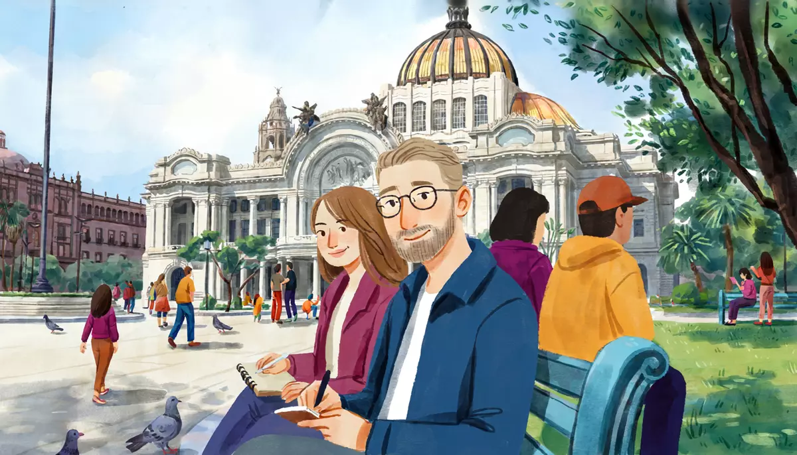

I can use everything from A1 together: introduce myself, describe people and places, buy, order, and talk about my week.Goal of this lesson · CEFR Overall spoken interaction A1; Overall oral comprehension A1; Overall reading comprehension A1; Overall written production A1
Paso 1 de 8
EscuchaListen
Three short scenes from Alex's first months. Listen, then answer.

Scene 1. Friday evening, over a coffee in Coyoacán. Mariana asks Alex about his first months in Mexico City. tú with friends; usted at the market and with Don Chuy
First listen without the text. Press Escuchar todo and answer the first question. Then show the Spanish text and listen again.
ChooseHow does Alex feel about his first months?
Your answer:
M
Mariana¡Hola, Alex! ¿Qué tal tus primeros meses en la ciudad?Hi, Alex! How are your first months in the city going?
A
AlexMuy bien, pero un poco cansado. Trabajo de lunes a viernes, de ocho a dos, y en la tarde preparo mis clases.Very well, but a bit tired. I work Monday to Friday, from eight to two, and in the afternoon I prepare my classes.
M
Mariana¿Y te gusta la escuela?And do you like the school?
A
AlexSí, mucho. Mis alumnos son muy simpáticos y Rocío, la directora, es muy amable.Yes, a lot. My students are very nice and Rocío, the director, is very kind.
M
Mariana¿Y la casa de doña Lupita?And Doña Lupita's house?
A
AlexEs vieja, pero muy bonita. Mi cuarto es pequeño, pero tiene mucha luz. Y doña Lupita cocina muy rico.It's old, but very pretty. My room is small, but it gets a lot of light. And Doña Lupita cooks really well.
M
Mariana¡Qué bien! ¿Y qué haces los fines de semana?Great! And what do you do on the weekend?
A
AlexLos sábados voy al mercado con doña Lupita, y los domingos corro en el parque. ¡Me encanta la ciudad!On Saturdays I go to the market with Doña Lupita, and on Sundays I run in the park. I love the city!
M
MarianaOye, mañana voy a ir a Xochimilco con unos amigos. ¿Quieres venir?Hey, tomorrow I'm going to go to Xochimilco with some friends. Do you want to come?
A
Alex¡Sí, claro! ¿A qué hora?Yes, of course! What time?
M
MarianaA las diez, en el metro Tasqueña. Y llevabring un suéter: en la mañana hace fresco.At ten, at Tasqueña metro station. And bring a sweater: it's cool in the morning.
1
ChooseListen again and answer.
What are Alex's working hours?
What does Alex do on Saturdays?
Where and when do they meet tomorrow?
Escena 2: Saturday morning at the market
Before Xochimilco, Alex buys fruit for Doña Lupita.
M
La marchanta¡Buenos días, güero! ¿Qué le damos hoy?Good morning, blondie! What can I get you today?
A
AlexBuenos días. ¿A cómo están las mandarinas?Good morning. How much are the tangerines?
M
La marchantaA treinta y cinco el kilo. Están bien dulces.Thirty-five a kilo. They're really sweet.
A
AlexNecesito dos kilos, por favor. Y medio kilo de jitomate.I need two kilos, please. And half a kilo of tomatoes.
M
La marchantaSon ochenta y cuatro pesos.That's eighty-four pesos.
A
AlexAquí tiene: cien.Here you are: a hundred.
M
La marchantaDieciséis de cambio. ¡Saludos a doña Lupita!Sixteen change. Say hi to Doña Lupita!
1
ChooseAnswer the questions: Escena 2: Saturday morning at the market
How much does Alex pay in total?
Escena 3: Saturday afternoon at the fonda
After Xochimilco, Alex has a late lunch at Don Chuy's fonda with Diego.
C
Don Chuy¡Buenas tardes, muchachos! ¿Qué van a querer?Good afternoon, boys! What are you having?
D
DiegoPara mí, cinco tacos de pollo y un refresco.For me, five chicken tacos and a soft drink.
A
AlexYo quiero una quesadilla de flor de calabaza. ¿Pica?I'd like a squash-blossom quesadilla. Is it spicy?
C
Don ChuyNo, nada. La salsa está aparte.No, not at all. The salsa is on the side.
A
AlexPerfecto. Y un café de olla, por favor.Perfect. And a café de olla, please.
D
DiegoOye, Alex, ¿te gusta Xochimilco?Hey, Alex, do you like Xochimilco?
A
Alex¡Me encanta! Las trajineras son muy bonitas. Pero en la mañana hace fresco.I love it! The boats are very pretty. But it's cool in the morning.
2
ChooseAnswer the questions: Escena 3: Saturday afternoon at the fonda
What does Alex order?
Paso 2 de 8
FíjateNotice
A review of the A1 grammar. Play the examples; check anything you've forgotten.
Four verbs for "to be / to have": ser, estar, tener, hay
Ser: who and what someone or something is: name, origin, job, description (soy de Chicago, es arquitecta, la casa es vieja). Estar: where something is, and how you are (el metro está cerca, ¿cómo estás?), plus the weather está nublado. Tener: to have, and your age (tengo dos hermanos, tengo 32 años); also tener que + infinitivo. Hay: there is / there are (hay un parque).
verb
use
example
ser
identity, origin, job, description
Mariana es de Puebla.
estar
location; how you are
La farmacia está enfrente del parque.
tener
possession; age
Doña Lupita tiene setenta y un años.
hay
existence
Hay un mercado muy bonito.
From the conversation:
Es vieja, pero muy bonita. Mi cuarto es pequeño, pero tiene mucha luz. Y doña Lupita cocina muy rico.It's old, but very pretty. My room is small, but it gets a lot of light. And Doña Lupita cooks really well.
Muy bien, pero un poco cansado. Trabajo de lunes a viernes, de ocho a dos, y en la tarde preparo mis clases.Very well, but a bit tired. I work Monday to Friday, from eight to two, and in the afternoon I prepare my classes.
Los sábados voy al mercado con doña Lupita, y los domingos corro en el parque. ¡Me encanta la ciudad!On Saturdays I go to the market with Doña Lupita, and on Sundays I run in the park. I love the city!
Six A1 Andamio structures
One conjugated verb + an infinitive lets you say a lot: necesito comprar, quiero ir, me gusta bailar, voy a trabajar, tengo que estudiar, puedo venir. Every one of them is in your Repaso deck, and the Andamio page drills them.
From the conversation:
Oye, mañana voy a ir a Xochimilco con unos amigos. ¿Quieres venir?Hey, tomorrow I'm going to go to Xochimilco with some friends. Do you want to come?
Paso 3 de 8
PracticaPractice
Mixed practice from all of A1, ending with the Andamio structures.
1
ChooseSer, estar, tener or hay? Choose.
Rocío ___ de Monterrey.
El mercado ___ a dos cuadras.
En mi colonia ___ tres parques.
Diego ___ veintiún años.
Hoy ___ nublado y ___ frío.
2
Type the missing wordsComplete Alex's message with the present tense.
Hola, Emily: yo muy bien en México. (estar)
Hi, Emily: I'm very well in Mexico.
en una escuela de idiomas. (trabajar, yo)
I work at a language school.
Los sábados doña Lupita y yo al mercado. (ir)
On Saturdays Doña Lupita and I go to the market.
Mis amigos tacos todos los viernes. (comer)
My friends eat tacos every Friday.
Mariana venir el sábado. (poder)
Mariana can come on Saturday.
¿Y tú qué este fin de semana? (hacer)
And what are you doing this weekend?
3
ChooseLikes: complete the conversation.
—¿Te ___ las trajineras? —¡Sí, me encantan!
—No me gusta el picante. —A mí ___. Prefiero la salsa verde suave.
A doña Lupita ___ encanta cocinar.
4
Listen and chooseNumbers, times and dates. Listen and choose.
Listen.
Show what they say
Rocío: La reunión es el jueves veintidós a las cinco y cuarto.
Listen.
Show what they say
La marchanta: Son trescientos setenta pesos, joven.
Listen.
Show what they say
Diego: Mi número es el cincuenta y cinco, treinta y nueve, setenta, catorce, sesenta y seis.
5
Say it in SpanishAndamio round: say it in Spanish (or type it).
I need to buy tortillas.
Necesito comprar tortillas.
Do you want to eat tacos? (tú)
¿Quieres comer tacos?
I like to walk in Coyoacán.
Me gusta caminar en Coyoacán.
Tomorrow I'm going to go to Xochimilco.
Mañana voy a ir a Xochimilco.
I have to prepare my classes.
Tengo que preparar mis clases.
Can you come at ten? (tú)
¿Puedes venir a las diez?
6
Your own sentencesYour first week.
Imagine your first week living in Mexico City. Write 5–6 sentences: where you live and what it's like, what you do every day, what you like and don't like, and a plan for the weekend.
Show a model answer
Vivo en un departamento pequeño en la Roma. Es bonito y tiene mucha luz. De lunes a viernes estudio español en la mañana y en la tarde camino por la ciudad. Me encantan los mercados, pero no me gusta mucho el tráfico. El sábado voy a ir a Coyoacán con una amiga.
Check your answer:
Paso 4 de 8
PalabrasWords
The 30 most useful A1 words and phrases. Do you know them all?
Alex writes an email to his sister Emily in Chicago. Read it.
Email
De: Alex Morgan
Para: Emily Morgan
Asunto: ¡Hola desde México!
¡Hola, Emily!
¿Cómo estás? Yo estoy muy bien. Te escribo en español: ¡es buena práctica!
Vivo en la casa de doña Lupita, una señora de Oaxaca muy amable. Tiene setenta y un años y cocina muy rico. Su nieto, Diego, tiene veintiún años y estudia ingeniería. Es muy simpático.
Trabajo en una escuela de idiomas de lunes a viernes. Mis alumnos son adultos y aprendenlearn muy rápido. Los jueves voy a un intercambio en un café de Coyoacán. Mi compañera, Mariana, es arquitecta y habla un poco de inglés.
Aquí la temporada de lluvias es de junio a octubre: en la mañana hace sol y en la tarde llueve. ¡Pero no hace frío!
El domingo voy a ir al Museo de Antropología con Mariana y Diego. ¿Tú qué vas a hacer el fin de semana?
Un abrazo,
Alex
Words with a dotted underline have a translation: tap or hover.
1
ChooseAnswer the questions about the text.
Why does Alex write to his sister in Spanish?
What does Alex say about his students?
Where is Alex going on Sunday?
Paso 6 de 8
CulturaCulture
Read about the culture behind the language.
A city of colonias
Mexico City has more than 9 million people (over 21 million in the whole metropolitan area) and some 1,800 colonias. In this level you have followed Alex to four of them: Narvarte, where he lives, a quiet middle-class neighborhood of houses and small buildings, famous for its taquerías; Coyoacán, where he goes to the intercambio, once a separate town, with its plazas, the coyote fountain and the Blue House of Frida Kahlo; Condesa, where Mariana waits out the rain, with tree-lined streets, Art Deco buildings, parks and cafés; and Xochimilco (below). Mariana's Sunday bike ride on Reforma also ends in the Centro Histórico, built on top of the Aztec city of Tenochtitlan, with the Zócalo, the cathedral and the National Palace.
Xochimilco, in the south, keeps the canals and chinampas (floating gardens) of the pre-Hispanic lake. On weekends families rent trajineras, the colorful flat boats, and float along the canals with food and music. Xochimilco and the Centro Histórico together are a UNESCO World Heritage Site (1987).
Elsewhere: Neighborhood names change across the Spanish-speaking world: colonia in Mexico, barrio in Spain and Argentina (and for the older neighborhoods of Mexican cities too), comuna for a large city district in Medellín (Colombia); in Chile a comuna is a whole municipality.
Sources
INEGI, Censo de Población y Vivienda 2020: Mexico City 9.2 million; Zona Metropolitana del Valle de México 21.8 million.
UNESCO World Heritage List: “Historic Centre of Mexico City and Xochimilco” (1987).
1
ChooseCheck: what did you learn?
What are trajineras?
Paso 7 de 8
Tu turnoYour turn
Now use it: do the role play, then write.
Role play: One minute about you
At the language exchange, each new person introduces themselves to the group for about one minute. Then Mariana asks you two questions. Record yourself if you can.
You
Greet the group and say your name, where you're from and where you live.
Your family and your home.
Your work or studies and your schedule.
What you like doing in your free time and how often.
Your plan for this weekend. Then answer Mariana's questions.
Mariana
Listens.
Asks: ¿Te gusta la comida mexicana?
Asks: ¿Qué tiempo hace en tu ciudad en invierno?
1. Listen to a model
One way the conversation could go. Listen, then try it yourself without looking.
A
AlexHola a todos. Me llamo Alex. Soy de Chicago, pero ahora vivo aquí, en la Narvarte.Hello everyone. My name is Alex. I'm from Chicago, but now I live here, in Narvarte.
A
AlexTengo treinta y dos años. Tengo un hermano y una hermana; mis papás viven en Chicago.I'm thirty-two. I have a brother and a sister; my parents live in Chicago.
A
AlexSoy maestro de inglés y trabajo de lunes a viernes, de ocho a dos.I'm an English teacher and I work Monday to Friday, from eight to two.
A
AlexEn mi tiempo libre me gusta leer y correr. Corro tres veces a la semana.In my free time I like reading and running. I run three times a week.
A
AlexEste fin de semana voy a ir a Chapultepec.This weekend I'm going to go to Chapultepec.
M
Mariana¿Te gusta la comida mexicana?Do you like Mexican food?
A
Alex¡Me encanta! Pero no me gusta mucho el picante.I love it! But I don't like spicy food much.
M
Mariana¿Y qué tiempo hace en Chicago en invierno?And what's the weather like in Chicago in winter?
A
AlexHace muchísimo frío y nieva.It's really cold and it snows.
2. Record yourself
Say your part aloud (pause the model after each of Mariana's lines), or answer the questions in the role card. Then play it back and compare.
3. Practice with an AI partner (optional)
Copy this prompt into ChatGPT or Claude, switch on voice mode, and have the conversation. It plays Mariana.
Stuck? Say «ayuda» and it gives you a hint in English, then carries on.
Finished? Say «terminamos» and it gives you feedback in English: what you did well, your mistakes, and useful phrases for next time.
Let's practice Spanish (Mexican Spanish, level A1). You are Mariana, 28, who goes to the Thursday language exchange at a café in Coyoacán, Mexico City. Use "tú".
New members introduce themselves to the group for about a minute. I'm next.
Rules:
- Speak only Spanish, short turns (1-2 sentences), simple language for an A1 learner. Speak slowly and use very common words.
- Invite me to introduce myself ("¡Preséntate!"). Let me talk without interrupting. Then ask me three short follow-up questions about different topics we've covered: my family, my home, food I like, my schedule, the weather in my city, my weekend plans. Use simple A1 Spanish.
- You play only this one person. Never speak as anyone else, and don't describe what other people say or do.
- If I make a mistake, don't stop me: repeat what I said correctly in your answer (for example: if I say "Yo tengo treinta años y soy de vive en Chicago", you say "Ah, tienes treinta años y vives en Chicago.").
- Ask one question that needs a time or a date in the answer ("¿A qué hora trabajas?", "¿Cuándo es tu cumpleaños?").
- When I say "ayuda", step out of the role play for a moment: in English, give me a short hint about what I could say next, with one or two short Spanish options, then continue the role play where we were.
- When I say "terminamos", stop the role play and give me feedback in English: 3 things I did well, up to 3 mistakes with corrections, and 3 useful phrases for next time.
Start now: say "¡Bienvenido al intercambio! ¿Te presentas al grupo?"
Writing: An email to a new friend
Write an email to a new language-exchange partner you haven't met yet: introduce yourself (name, age, origin, home, work), your family, your free time, and suggest a day and time to meet.
60–90 words.
Show a model answer
¡Hola, Daniel!
Me llamo Alex y soy tu compañero de intercambio. Tengo treinta y dos años y soy de Chicago, pero vivo en la Ciudad de México, en la Narvarte. Soy maestro de inglés. Tengo un hermano y una hermana. En mi tiempo libre me gusta correr y leer, y los sábados voy al mercado. ¿Puedes el jueves a las siete en el café de Coyoacán?
¡Saludos!
Alex
Check your text:
Paso 8 de 8
¿Lo logré?Did I do it?
Check yourself against the goal of the lesson.
Read each statement and be honest: anything marked casi or todavía no goes into Repaso so it comes back soon.
I can introduce myself and talk about my family and home.
I can buy things, order food, and say what I like.
I can talk about time, my week, and the weather.
I can understand short everyday conversations on these topics.
I can write a short email or postcard about myself and my week.